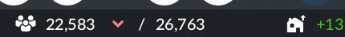
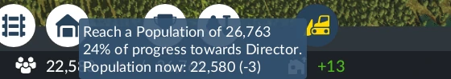
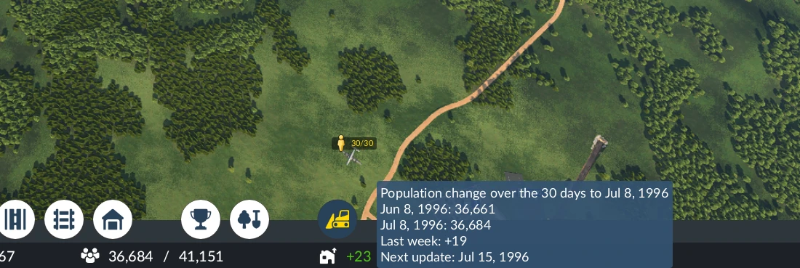

Company Enhancements
Your company's ranks are earned by population, but the game bar never shows how close you are to the next one, or whether your towns are growing. This mod adds two counters beside Transported Passengers and Cargo: the population reached against the next rank's, and how much it changed over the last 30 days.
Population Counter
Setting: Population Counter · On by default
- 122,579: the highest population all your towns together have reached. This is what earns ranks.
- 2The red arrow: your towns have shrunk below that figure since.
- 326,763: the population your next rank needs.
- 4Population Change shows its icon alone until its first weekly value.

- 1The population the next rank needs, as on the rank's card in the company window.
- 2How far you are towards the next rank, as the Company button shows it.
- 3Today's population and how far it is below the highest reached; shown only while the red arrow is.
Why
Ranks are earned by population: the highest population all your towns together have reached. The company window shows it on each rank's card and the Company button gives a share of progress, but nothing on screen shows the figures while you play, or that your towns have started to shrink.
What it does
A third counter beside Transported Passengers and Cargo at the bottom of the screen: the population your company has reached and the population its next rank needs, for example 48,210 / 52,000. They are the figures of the company window's rank card. When your towns have shrunk below the highest population reached, a red down arrow shows beside it.
Good to know
- The reached figure never drops: it is the highest population seen, which is what the game counts for ranks. Today's population is in the tooltip while the red arrow shows.
- The tooltip gives the progress towards the next rank, as the Company button does.
- At the highest rank the counter shows the population alone.
- Hidden in the map editor and wherever the company has no ranks to earn, as the game's own Company button is.
Population Change
Setting: Population Change · On by default
- 1+23: the population's change over 30 days, green as it grew.
- 2The 30 days end at the start of this week, a Monday.
- 3The population on both dates.
- 4Last week's value, which the arrow compares with.
- 5When the figure changes next.
Why
The game keeps no daily record of its population, so there is no way to tell whether your towns are growing faster or slower than a few weeks ago, or have started to shrink.
What it does
A counter beside the Population Counter, with a house and arrow icon: how much the population of all towns changed over the 30 days before the start of the week, green when it grew (+1,234) and red when it shrank (-1,293). An arrow beside it compares it with last week's value: up when larger, down when smaller, = when the same.
Good to know
- It is updated once a week, on Monday, and stays put in between.
- The tooltip gives the dates and populations, last week's value and the date of the next update.
- The mod notes the population once a day and keeps the last few weeks in your save. In a save new to the mod the first value comes on the next Monday, over the days recorded so far, and the arrow once 30 days are recorded.
- That record is all the mod keeps in your save, and the mod can be removed at any time.
Settings
Choosing a save's mods: the gear next to Company Enhancements → Settings. Each save keeps its own choice. Off turns a feature off completely.
| Setting | Default | What it does |
|---|---|---|
| Population Counter | On | A third counter beside Transported Passengers and Cargo at the bottom of the screen: the population the company has reached / the population the next rank needs. |
| Population Change | On | A counter beside it: how much the population of all towns changed over 30 days (green up, red down), updated each week, with an arrow against last week's value. |
| Logging | Off | Writes the mod's messages to the game log (stdout.txt), for bug reports. |
More
Compatibility
Works with any map and any other mod. Both counters only read the game; the change counter keeps a short population record in your save.